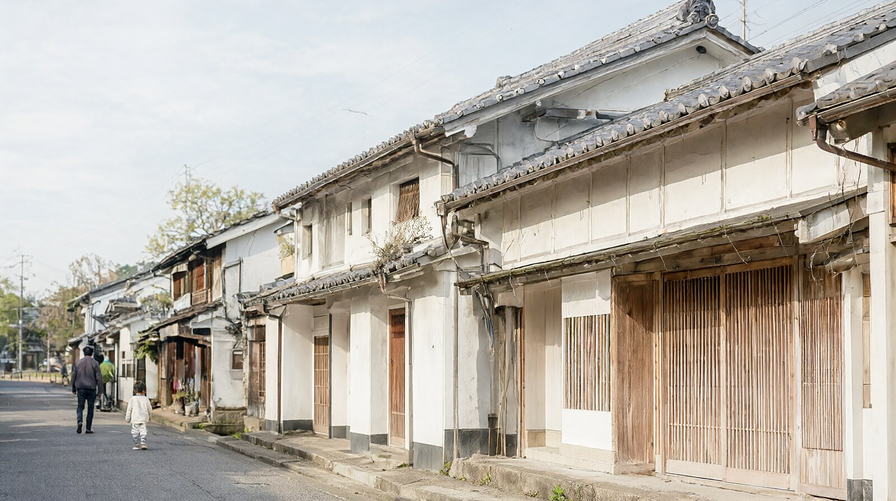

특급 25분, 걷는 거리와 점심, 돌아오는 열차까지 가족 기준 현실 일정
마쓰야마에서 우치코 당일치기
핵심 요약
- 마쓰야마역에서 우치코역까지 특급 우와카이로 약 24~25분, 자유석 1,610엔(약 13,700원)입니다 (나비타임 검색 결과, 승차권 850엔 + 특급 자유석 760엔).
- 중요: 극장 우치코자는 2024년 9월부터 약 4년 일정의 개보수 공사로 휴관 중이고, 2029년 봄 재개관 예정입니다 (우치코정 관광협회). 지금은 공사 중에만 공개하는 분장실(가쿠야)만 볼 수 있습니다.
- 옛 거리(요카이치·고코쿠 거리)는 걸어서 충분하며, 역에서 남쪽 입구까지 약 1km, 걸어서 약 15분입니다 (관광협회).
- 거리만 보면 1~2시간, 점심과 카페까지 넣으면 3시간 안팎입니다 (관광협회). 초등 자녀와는 3~4시간을 잡으면 무리가 없습니다.
- 우리 가족 3인 열차 왕복 + 3관 공통권은 약 8,060엔(약 68,800원)입니다. 어린이 열차 요금은 가정치입니다.
본문
1. 특급 요금과 소요시간
| 구간 | 열차 | 소요시간 | 어른 편도 | 근거 |
|---|---|---|---|---|
| 마쓰야마 - 우치코 | 특급 우와카이(자유석) | 약 24~25분 | 1,610엔 (약 13,700원) | 나비타임 (승차권 850엔 + 특급 자유석 760엔) |
| 마쓰야마 - 우치코 | 특급 우와카이(지정석) | 같음 | 2,140엔 (약 18,300원) | 승차권 850엔 + 지정석 특급 1,290엔 단순 합산 |
| 마쓰야마 - 우치코 | 보통 열차 | 약 57분~1시간 14분 | 850엔 (약 7,300원) | 나비타임, 에키탄 |
- 지정석 특급 요금 1,290엔은 나비타임 검색 결과에서 확인했습니다. 지정석 합계는 제가 더한 값입니다.
- JR시코쿠 공식 안내에서 어린이 특급료는 어른의 절반(끝수 버림)이라 자유석 특급권은 380엔입니다. 승차권은 어른 850엔의 반액인 425엔으로 계산해 편도 약 805엔입니다 (승차권 반액은 이 글의 계산).
- 에히메현 안 JR 역은 교통카드 사용 지역 밖이라는 안내가 있어 승차권을 따로 사는 편이 안전합니다. 확인 필요 (허브 글 J 블록과 같은 항목).
- 스마트폰 앱 할인표(스마에키 S 표)는 마쓰야마 - 우치코 구간이 1,440엔이며, JR시코쿠 스마에키 공식 안내에서도 확인됩니다 (jr-eki.com). 무할인 합계 1,610엔보다 170엔 싸고 구매 조건은 확인 필요.
2. 가는 열차와 돌아오는 열차
2026-09-03~10-22 시점의 비공식 시각표(나비타임, 에키스파) 기준입니다. 평일, 토요일, 휴일 구분과 개정이 있을 수 있어 방문 전 JR 시코쿠 시각표를 확인하세요.
| 방향 | 특급 우와카이 시각 | 비고 |
|---|---|---|
| 마쓰야마 출발 | 05:48 → 06:12, 06:49 → 07:14, 08:11 → 08:35 | 이후 시각은 확인 필요 (JR 시코쿠 마쓰야마역 발차 시각표) |
| 우치코 출발(마쓰야마행) | 06:23, 07:34, 08:36, 09:53, 10:46, 11:46, 12:46, 13:46, 14:46, 15:46, 16:46, 17:46, 18:46, 19:46, 20:46, 22:20 | 출발 시각만 확인. 마쓰야마 도착은 약 25분 뒤로 보되 확인 필요 |
- 돌아오는 특급은 10:46부터 매시 46분이라 외우기 쉽습니다. 가족 현실 일정이라면 14:46이나 15:46 편이 무난합니다.
- 보통 열차는 08:08, 10:31, 12:31, 14:31, 16:31, 18:31에 우치코에서 출발합니다(같은 비공식 시각표). 특급을 놓치면 한 시간 정도 기다리거나 보통 열차로 1시간 이상 걸립니다.
- 자유석은 만석이면 서서 가야 합니다. 좌석을 지키려면 지정석을 쓰세요.
3. 우치코자(극장)와 옛 거리 걷기
우치코자
- 1916년(다이쇼 5년)에 마을 유지들이 지은 목조 2층 극장으로, 무대 밑 통로와 꽃길 같은 무대 뒤를 볼 수 있던 곳입니다 (관광협회). 2024년 9월부터 개보수 중이라 본관 내부는 보지 못합니다.
- 휴관 중에는 분장실을 공개합니다. 입장료는 어른 200엔, 어린이(초중학생) 100엔입니다. 2025년 8월 1일부터 2028년 말까지(예정) 한시 할인가입니다 (우치코정).
- 3관 공통권(분장실, 목랍 자료관 가미하가테이, 역사민속자료관 "상거래와 생활 박물관")은 어른 700엔, 어린이 350엔입니다. 우리 가족 3인은 1,750엔(약 14,900원)입니다 (우치코정).
- 재개관 시점이 바뀔 수 있으니 방문 전 우치코정 공식 페이지를 확인하세요.
옛 거리
- 약 600m 거리에 에도 말기부터 메이지 시대 상가와 창고가 줄지어 있습니다. 건물마다 모양이 다른 것이 특징입니다 (관광협회).
- 관광협회 모델 코스: 우치코역, 우치코자, 방문자 센터, 상거래와 생활 박물관, 문화교류 빌라 다카하시 저택, 와양초 가게, 옛 거리, 목랍 자료관까지 천천히 돌아 약 1시간 30분입니다. 역에서 우치코자까지 도보 10분입니다.
- 상거래와 생활 박물관은 인형으로 식사와 살림 장면을 재현해, 관광협회가 부모와 아이가 함께 보기 좋다고 소개합니다.
- 휴관일: 방문자 센터 목요일, 마을 보존센터와 문화교류 빌라 화요일. 분장실, 목랍 자료관, 박물관은 연말연시를 제외하고 개관합니다 (관광협회). 운영 시각은 확인 필요.
- 마을 가이드는 1시간~2시간 코스, 1인 500엔(4명 이하는 합계 2,000엔), 1주일 전 예약입니다 (관광협회). 필수는 아니며 우리 3인이면 2,000엔입니다.
4. 점심
| 가게 | 정보 | 예약 | 출처 |
|---|---|---|---|
| 시모하가테이(소바) | 11:00~15:00, 주문 마감 14:30, 수요일 휴무, 1~2월은 토일공휴일만 영업 | 확인 필요 | 우치코정 관광협회 |
| 요시초(향토요리) | 11:30~14:00, 휴무 불규칙 | 완전 예약제 | 우치코정 관광협회 |
| 길가 휴게소 레스토랑 가라리 | 11:00~15:00, 주문 마감 14:30 | 확인 필요 | 우치코정 관광협회 (역에서 거리는 확인 필요) |
- 옛 거리 주변 식당은 화요일이나 수요일에 쉬는 곳이 많고 임시 휴무가 있으니, 요일을 정할 때 먼저 가게 휴무를 확인하세요 (관광협회).
- 추천 순서: 옛 거리 걷기 → 11:30 점심 → 카페 → 14:46 열차. 이 순서가 대기와 서두름이 적습니다. 메뉴 가격은 확인 필요.
5. 아이와 걷는 시간 현실성
| 구간 | 거리와 시간 | 메모 |
|---|---|---|
| 우치코역 → 거리 남쪽 입구 | 약 1km, 걸어서 약 15분 | 관광협회 |
| 우치코역 → 우치코자 | 걸어서 10분 | 관광협회 모델 코스 |
| 거리 걷기(상점, 외관 중심) | 30~45분 | 에히메 여행 안내 블로그(비공식) |
| 시설 내부 포함 | 2~3시간 | 같은 블로그(비공식) |
| 점심과 카페 포함 | 약 3시간, 반나절 | 관광협회 |
- 왕복 2km 남짓에 평지가 많아 초등 자녀는 걸을 수 있습니다. 다만 계단이나 언덕은 확인하지 못했습니다. 확인 필요.
- 역 앞 관광안내소와 방문자 센터에서 지도를 받으면 헤매지 않습니다.
- 비가 오면 실내 시설(박물관, 목랍 자료관)로 돌리는 것이 현실적입니다. 시설별 운영 시각을 확인하세요.
6. 모델 일정 (마쓰야마역 기준, 예시)
| 시각 | 할 일 |
|---|---|
| 08:11 | 마쓰야마역 출발 특급 우와카이(자유석) |
| 08:35 | 우치코역 도착. 아침 일찍이라 시설 개관 전일 수 있음. 개관 시각 확인 필요 |
| 09:00 | 옛 거리 걷기와 사진 |
| 10:30 | 상거래와 생활 박물관, 분장실 (3관 공통권 사용) |
| 11:30 | 점심 |
| 13:00 | 카페나 기념품 (와양초, 종이 제품) |
| 14:46 | 우치코역 출발 특급 (또는 15:46) |
| 약 15:10 | 마쓰야마 도착, 도고온천으로 이동 (도착 시각은 확인 필요) |
- 더 천천히 하려면 마쓰야마역 출발 시각을 늦춰도 좋으나, 이후 시각은 확인 필요입니다.
7. 3인 비용
| 항목 | 금액 | 근거 |
|---|---|---|
| 특급 자유석 왕복(어른 2) | 6,440엔 (약 54,900원) | 1,610엔 x 2명 x 2 |
| 특급 왕복(어린이 1) | 약 1,620엔 (약 13,800원) | 가정치. 어른의 반액 단순 계산 |
| 3관 공통권(3인) | 1,750엔 (약 14,900원) | 어른 700 x 2 + 어린이 350 |
| 합계(점심 제외) | 약 8,060엔 (약 68,800원) | 환율 100엔=853.02원, 약 |
확인 필요 항목
- 마쓰야마 출발 08:11 이후 특급 시각과 평일, 휴일 구분. 우치코 출발 특급의 마쓰야마 도착 시각.
- 분장실, 목랍 자료관, 박물관의 개관 시각.
- 점심 식당의 가격과 예약 필요 여부(시모하가테이, 가라리).
- 역에서 옛 거리까지 계단, 언덕 여부.
- 교통카드 사용 가능 여부.
- 우치코자 재개관 시점(2029년 봄 예정이며 변경 가능).
확인 방법과 출처
- 우치코자 휴관, 소요시간, 휴무일, 점심: 우치코정 관광협회 FAQ와 산책 코스 페이지 (2026-10-22 확인).
- 입장료와 3관 공통권: 우치코정 공식 사이트 입관료 페이지 (2025-07 게시).
- 열차 운임과 시각: 나비타임, 에키스파(비공식, 2026-09 시점), JR 시코쿠 시각표 PDF는 본문을 읽지 못함.
- 운임 표: JR 안내 비공식 사이트(2026-10-12 갱신).
- 환율: 한국수출입은행 매매기준율 100엔=853.02원 (2026-10-16 고시, 허브 글 값을 재사용).
공식 출처
- https://www.we-love-uchiko.jp/faq
- https://www.we-love-uchiko.jp/stroll/stroll2
- https://www.we-love-uchiko.jp/stroll_guide/
- https://www.town.uchiko.ehime.jp/soshiki/3/nyuukanryou-verup.html
- https://www.jr-shikoku.co.jp/01_trainbus/jikoku/pdf/uchiko.pdf (시각표 PDF)
같이 보면 좋은 글
- 마쓰야마 여행 가이드
- 도고온천 본관 이용 가이드
- 마쓰야마 3박 4일 느린 일정 (matsuyama-3n4d-slow)